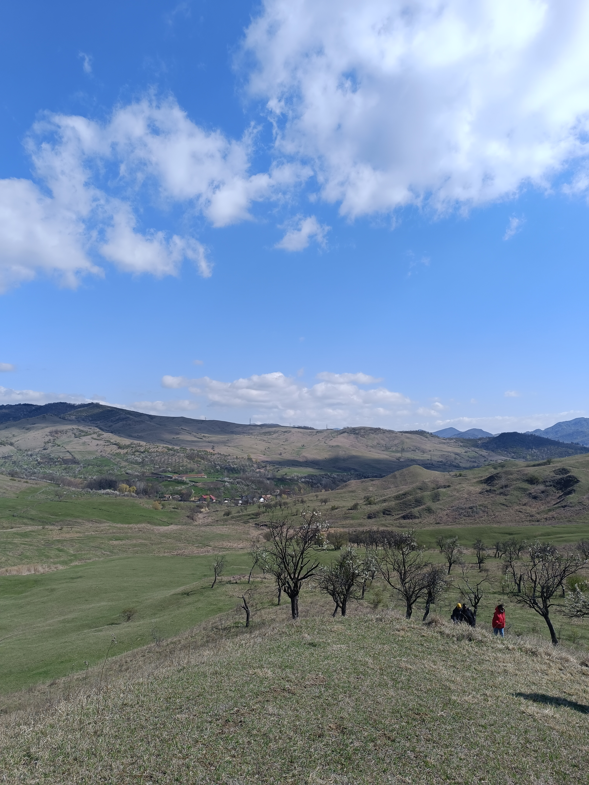
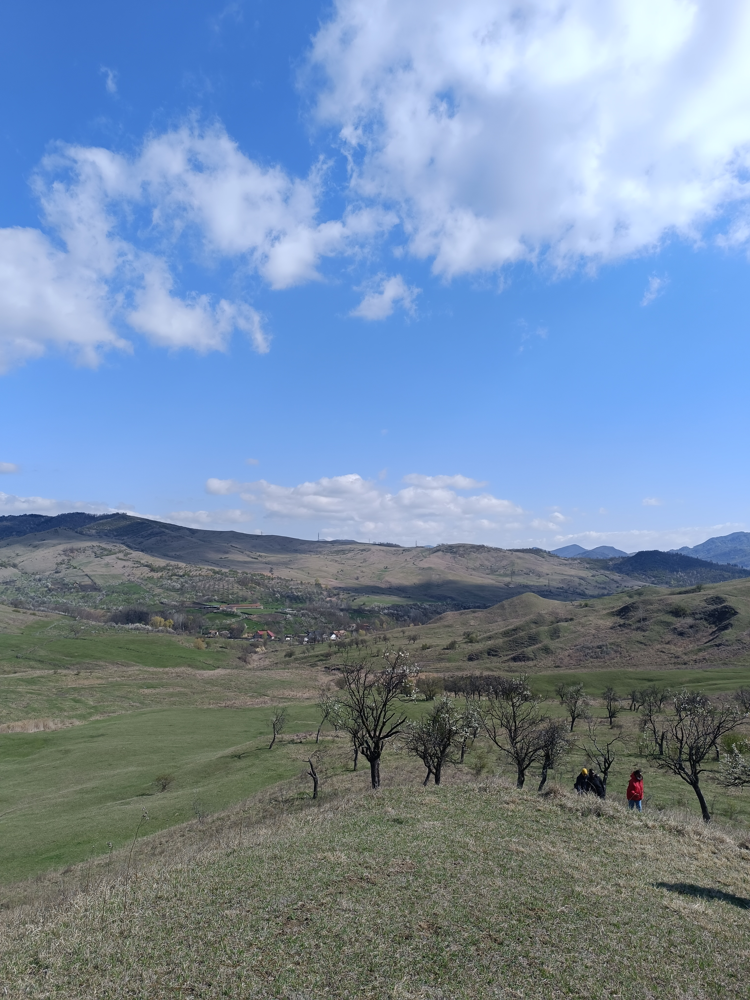
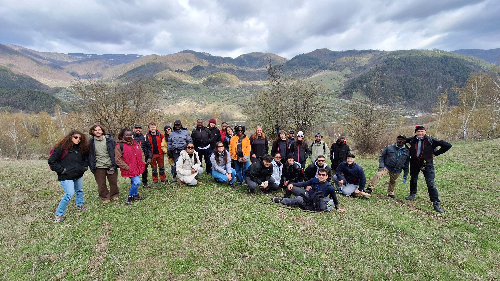
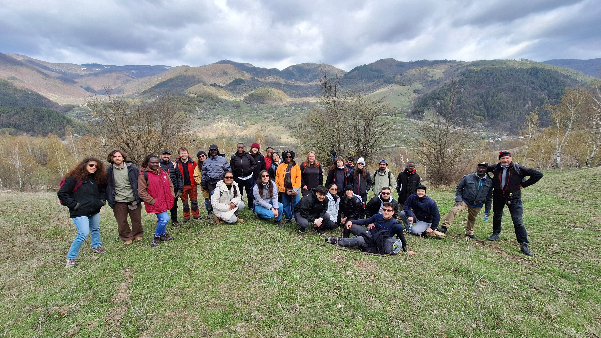

This is my BIP programme: Quantifying vulnerability to natural hazards experiences!
Scroll down to find more!
Report on the Blended Intensive Programme
Quantifying vulnerability to natural hazards in changing climate patterns
New perspectives and methods
In April 2025, I participated in a Blended Intensive Programme (BIP) hosted by the University of Bucharest, focusing on "Quantifying Vulnerability to Natural Hazards in Changing Climate Patterns: New Perspectives and Methods". This program combined virtual sessions with a field component in Romania, offering a comprehensive understanding of vulnerability assessment.
Virtual component
Over five weeks, during the month of March, we engaged in weekly sessions covering topics such as:
- Vulnerability in the Age of the Anthropocene
- Dynamics of Geohazards and Disasters in Fragile Landscapes
- Sea Level Changes and Adaptation Methods
- Increasing Resilience of Landscapes and Communities to Climate Change Impacts
- Social Vulnerability in Coastal Environments
- Climatic and Tectonic Signals in Landscape Evolution
- Changing Geohazards in Response to Tectonic and Climatic Forcing
- State of the Climate
These sessions featured experts from various disciplines, including climate change, geomorphology, engineering, psychology, sociology and anthropology, providing a holistic view of vulnerabilities.
Field Experience in the Vrancea Seismic Region
So we could finally put on practice what we have been learning, from the 7th to the 11th of April, the was accompanied by five lecturers. The field component took place in Bucharest and Vrancea region.
- Day 1 – Bucharest Kickoff
Our journey began in Bucharest, where we were introduced to the region's geological setting through lectures focused on geomorphological processes. Later, we explored the city on foot, observing how structural retrofitting has been applied to buildings still vulnerable to seismic activity—a legacy of the devastating 1977 earthquake. On this same day we drove to Vrancea region
- Day 2 – Into the Vrancea Seismic Zone
We headed to Pătârlagele, located in the heart of the Vrancea seismic region. The day’s field stops included a shallow landslide developed in the molasse formations of the Subcarpathians, followed by a visit to a reservoir site where human-induced slope instability had become evident due to construction activities.
- Day 3 – Multi-Hazard Landscapes
Our morning began with a visit to a site affected by a landslide triggered by seismic activity—an example of how one hazard can lead to another. In the afternoon, we hiked through an area recently shaped by mudflows, discussing strategies for predicting and managing such climate-related events.
- Day 4 – Risk at the Local Scale
We explored a nearby village on foot, comparing different styles of residential buildings, which highlighted clear contrasts in structural vulnerability. Later, we visited active mud volcanoes and reflected on the complications that arise when attempting disaster risk reduction in protected or environmentally sensitive areas.
- Day 5 – Presenting Our Insights
On our final day, we worked in small teams to present our impact chain models, integrating what we had observed throughout the week. We wrapped up the fieldwork with a visit to the Natural Hazards Research Center in Pătârlagele, where researchers shared insights into their ongoing projects. That evening, we returned to Bucharest.
 

 
